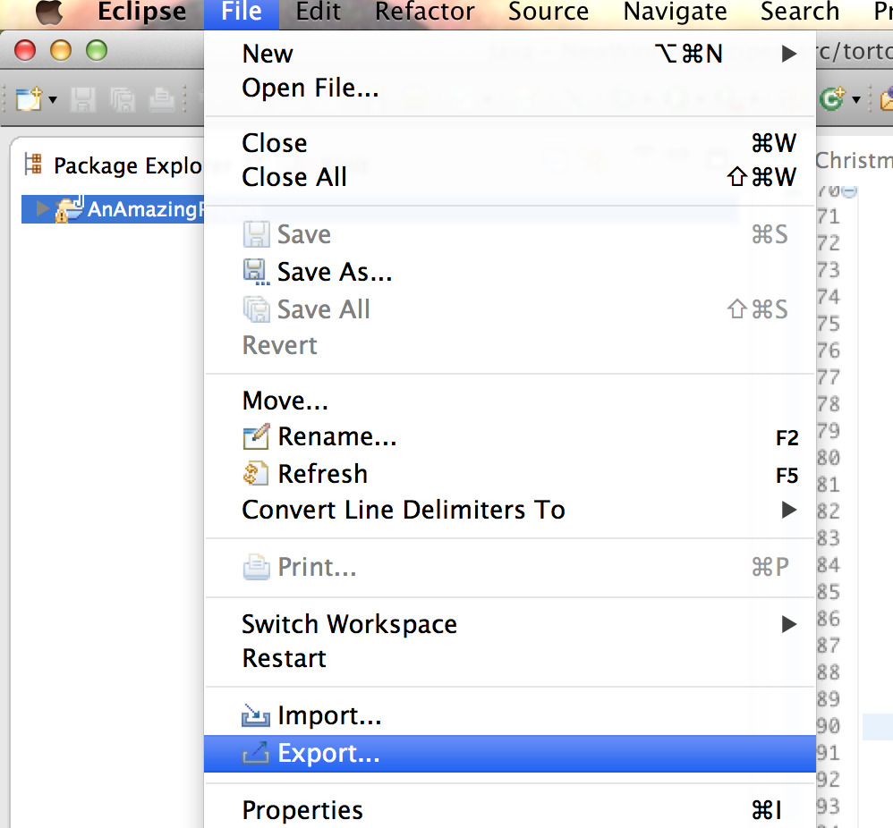

2. Under Java, select “Runnable JAR File”.
3. Select your program under “Launch configuration” and use “Browse…” to put your JAR on the Desktop.
4. Click “Finish” and “OK” twice.
5. Now your JAR file is on your Desktop and you can send it anywhere.